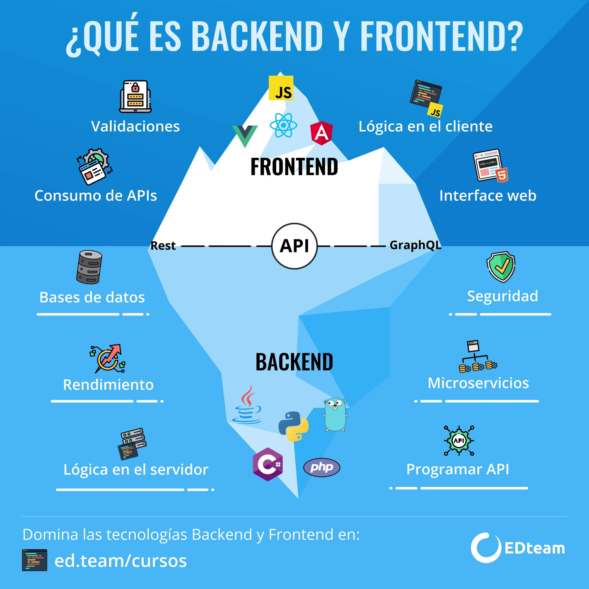

Desarrollo Web
¿Qué es el desarrollo web?
La web es todo lo que se puede ejecutar en un navegador. ¿Y qué es un navegador? Son programas como Chrome, Opera, Microsoft Edge que nos permiten acceder a sitios como Twitter, Facebook, YouTube, Slack, etc.
Podríamos dividir el desarrollo web en 2 partes:
- Sitios web: Son solo páginas web informativas. Su función es meramente informar al usuario, sea sobre un negocio, escuela, etc. Se puede utilizar un CMS como WordPress para crearlos.
- Aplicaciones web: Es una aplicación completa y contiene una lógica compleja, por ejemplo: YouTube es una aplicación web, se pueden realizar funciones como guardar vídeos, crear una transmisión, marcar favoritos, etc.
El desarrollo web se podría divide en backend y frontend. De manera simple podemos decir que el backend es la parte se encarga del lado del servidor (No es visible), y el frontend se encarga del lado del cliente (lo puedes observar desde tu pantalla).
En esta infografía puedes ver de todo lo que se encarga el Backend y Frontend en una aplicación.
¿Qué hace un desarrollador web?
Si te preguntas qué es el desarrollo web, deberás saber primero que el profesional indicado para llevarlo a cabo es un desarrollador web o web developer. Su función es programar sitios web y aplicaciones en virtud de los objetivos comerciales que tenga una empresa.
¿Cómo lo hace? Pues, a través de líneas de código complejo en las que utiliza una gran variedad de lenguajes de programación, tales como CSS y Javascript. También tiene a disposición distintas herramientas de desarrollo web.
Las funciones de un desarrollador web son las siguientes:
- Se encarga de crear sitios web y aplicaciones web
- Define la interfaz gráfica, es decir, la interacción que se da entre la persona y el artefacto.
- Mantiene el correcto funcionamiento del sitio web.
- Identifica y corrige errores que puedan afectar a la navegación del usuario.
- Desarrolla nuevas funcionalidades para facilitar la interacción y el acceso al contenido.
Tecnologías a aprender:
Hablamos del HTML, CSS y JavaScript, los tres permiten el desarrollo de la parte gráfica del proyecto y la interfaz de usuario. Según StackOverflow, el 69,7% de los programadores han utilizado JavaScript, convirtiéndolo en el lenguaje más consultado por los desarrolladores en todo el mundo, seguido por el HTML/CSS con un 63,1%.
HTML: Es un conjunto de códigos breves que describe el contenido de una plataforma web. Un lenguaje de hipertexto de etiquetas que se encuentra en continua evolución, siendo el más actualizado el HTML5. Se construye bloque a bloque y al guardarlo se puede encontrar a través de los buscadores.
CSS: Da forma a la representación visual del HTML, indicando cómo debe reflejarse. Proporciona el estilo, el diseño, presentándose como una de las tecnologías web por excelencia a las que recurren los desarrolladores gráficos.
JavaScript: Es el encargado de aportar interactividad al desarrollo, programa el comportamiento de los elementos aportando dinamismo a la interfaz. Crea animaciones, objetos, cookies, validación de datos en los formularios, etc. Y, además, es multiplataforma y totalmente universal, por lo que también se puede utilizar para el desarrollo mobile.
HTML
CSS
JavaScript
Frameworks y librerías Frontend
Además de los lenguajes de programación que definen el «idioma» y cómo estará escrito el código, es importante destacar la importancia de los frameworks de desarrollo. Una serie de herramientas y librerías de código pre-escrito que facilitan a los desarrolladores las tareas cotidianas o de uso común para evitar ejecutarlas desde cero.
Los frameworks dan un marco de trabajo para programar en un lenguaje y las librerías se encargan de solucionar problemas haciendo el código más legible.
- Angular: Entre los más sonados y populares encontramos el framework Angular, perfecto para aplicaciones web. Además, utiliza HTML para realizar UI y es compatible con las últimas versiones de Chrome, Firefox, Edge, Android y iOS.
- VueJS: Es un framework progresivo escrito en JavaScript en código abierto, se puede adaptar fácilmente a cualquier proyecto, convirtiéndose en una de las tecnologías web más populares.
- React: Al igual que Vue.JS, React también está escrito en código abierto en JavaScript, muy útil para construir las interfaces de usuario. Es una biblioteca, aunque muchos programadores la consideran un framework por la excelencia de sus componentes. Así mismo, admite y combina diferentes idiomas y tecnologías.
Tanto Vue.Js como React son los frameworks con más aceptación por parte de los desarrolladores, ya que para tecnología más del 70% de programadores que han trabajado con ella desean seguir haciéndolo.

Tecnologías Backend
Este conjunto de lenguajes se encarga de implementar los comportamientos de la web en el servidor. Se programa la interacción web, almacenan la información en el servidor y se conectan con la base de datos para actualizarse e ir mostrando contenido determinado.
- PHP: Es una de las mejores tecnologías para desarrollo web, ya que es de uso general y se adapta especialmente a este tipo de desarrollos. Se usa para conectar la plataforma web con el servidor de datos, permitiendo administrar los archivos del server, editar código, compiladores, la recopilación de datos o la modificación de la BBDD, entre más aspectos.
- Python: Sencillo pero potente, porque usa un menor número de líneas de código. Además, tiene varias librerías y es totalmente gratuito.
- Java EE: También conocido como Jakarta EE o Java Enterprise Edition, opera para el desarrollo y ejecución del software de Java en el backend, muy popular entre las plataformas empresariales de gran nivel.
Otras de las mejores tecnologías para desarrollo web que podemos encontrar en el sector existentes son lenguajes como Ruby, Scala o Elixir.
Frameworks Backend
Los frameworks generan diversos beneficios en el desarrollo. El código web se encuentra organizado y estructurado desde el primer momento y se favorece el control y la seguridad de la plataforma filtrando la entrada y salida de datos.
Además, constan de una comunidad muy amplia y en continuo crecimiento. Por lo que siempre se pueden realizar consultas o estar al tanto de las nuevas actualizaciones.
- NodeJS: JavaScript se creó para permitir el desarrollo de la parte frontal, pero los últimos años ha ido evolucionando y ha creado su lugar en el backend con NodeJS. El lenguaje de JS para llevar a cabo toda la parte del servidor.
- Laravel: Tecnología de código abierto y uno de los frameworks más utilizados mundialmente. Ideal para desarrollar de forma elegante y simple aplicaciones y servicios web utilizando PHP.
Bases de Datos
Estas son un conjunto de datos que pertenecen a un mismo contexto y se encuentran recogidos sistemáticamente para poder utilizarlos en cualquier momento. Para su gestión, existe una serie de sistemas encargados de almacenar, modificar y extraer información de ellas empleando programas específicos.
- MySQL: Es el gestor de bases de datos más utilizado en todo el mundo por los programadores actuales. Se utiliza para almacenar la información, y trabaja con múltiples tablas que permiten crear nuevas bases de datos y hacer cualquier consulta.
- MongoDB: Es otra base de datos muy popular que permite un desarrollo escalable, rápido e interactivo. Se trata de un sistema en código abierto enfocado a documentos.
¿Qué tecnología utilizar?
Recurrir a lenguajes populares y de alta calidad para el desarrollo de los proyectos web facilita a los programadores la gestión del código.
Existen desarrolladores especializados tanto en las mejores tecnologías para desarrollo web de front, como de back o ambas. Estos últimos son llamados full-stack developers, uno de los perfiles tecnológicos más demandados en las empresas este año.
Tienen conocimientos en todas las áreas de desarrollo y lenguajes característicos. Son un punto clave a la hora de llevar a cabo cualquier proyecto tecnológico para que acompañen en todo el proceso de tu proyecto web de desarrollo o de cualquier tipo.
Video sobre el tema
Fuentes
Todos los derechos reservados. Alexander Oliva